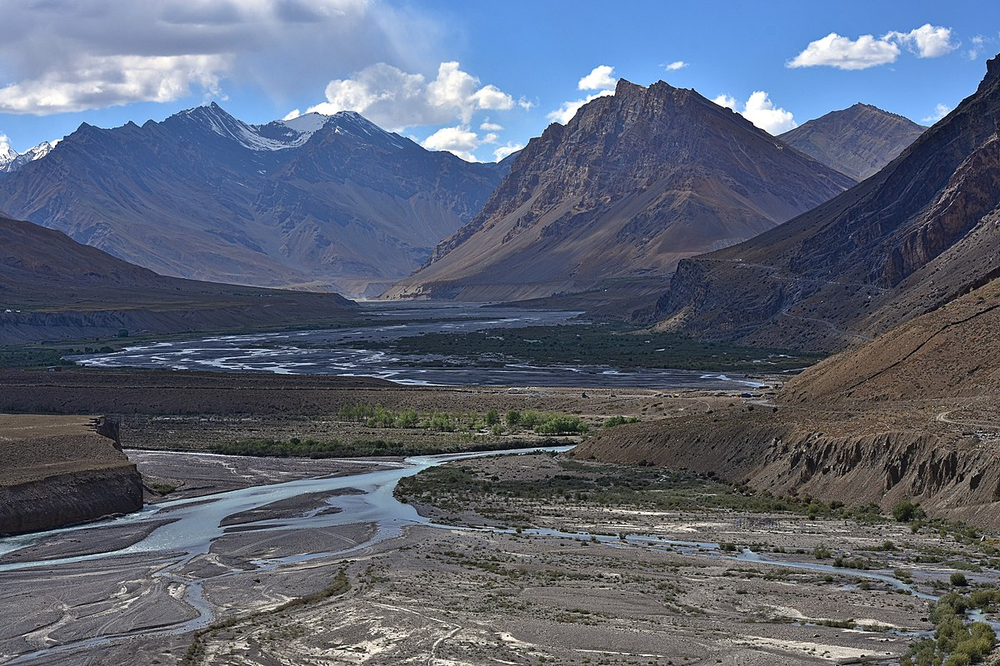
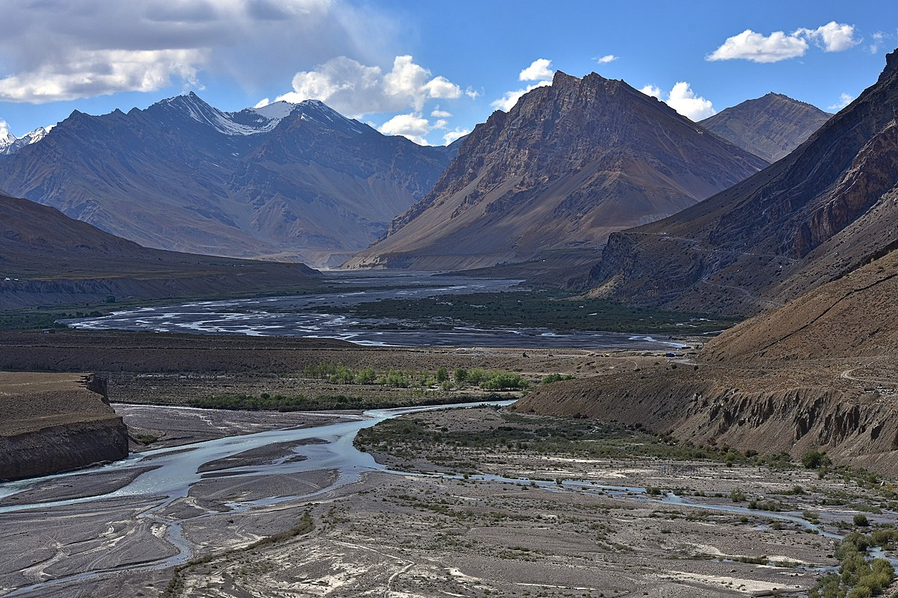

Must Visit Destinations
Spiti Valley
Spiti valley is famous for its natural beauty and cultural heritage. Tabo monastery is one of the most prominent attractions in Spiti.
 



Delhi
One of the most beautiful cities in India, Delhi offers a mix of history that feels alive in Old Delhi. As the capital of the Mughal empire, the city has some of the world's most awe-inspiring forts and structures.

Agra
Agra is a city on the banks of Yamuna river in Uttar Pradesh. Popular as the city of Taj Mahal, Agra has more to offer than just the wonderful Taj. It is home to 3 UNESCO World Heritage Sites.


Jaipur
Jaipur is famous as Pink City of India and it is also the Capital City of Rajasthan. Jaipur is famous for Rajasthani traditional Jewelry, traditional fabrics and handicrafts, and also for traditional rajasthani cuisine.

Mumbai
Mumbai is India's biggest and most populous city. Apart from being the country's financial capital, Mumbai has earned several other titles like 'the land of dreams' and the city that never sleeps.